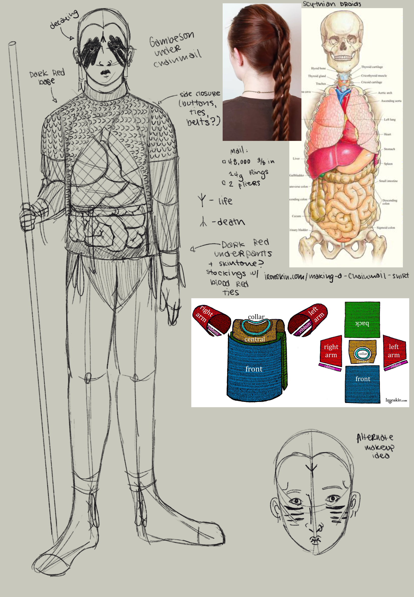
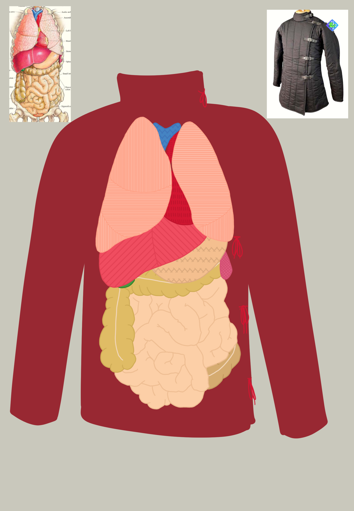
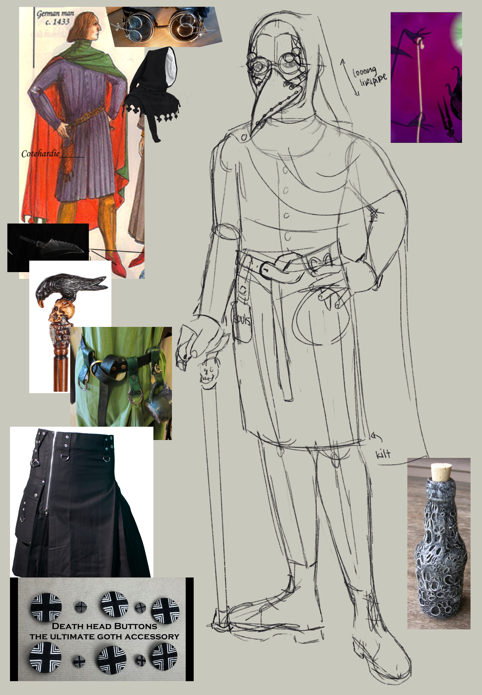
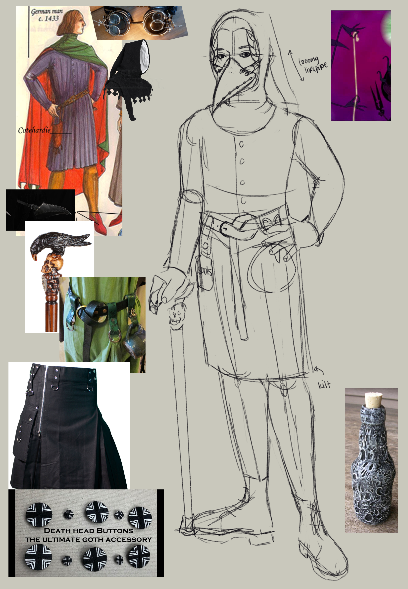
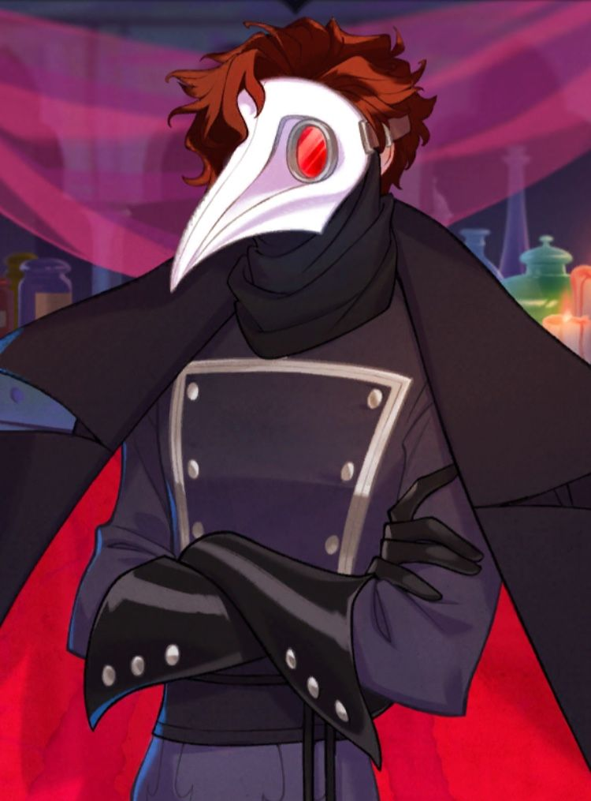
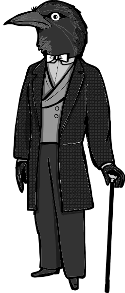

Costume Concepts
When I start a design, I usually already have a vague image in my head of what I want the costume to look like. As I design, I look for images of possible costume pieces, already existing patterns, and references for different objects (such as the internal organs diagram for "Sir Ottomy," and the bottle and cane for "Doctor Death"). Research usually influences what the final design drawing looks like. In my experience, the sketch and the final design aren't always exactly the same, due to different issues which may come up with materials or time, but having a sketch to work off of makes designing and building a costume much easier.
Sir Ottomy
Inspired after a friend gave me a basic lesson on making chainmail, I created this costume for a zombie knight named "Sir Ottomy". Below are the two sketches (one with the maille, one without), as well as the design of the gambeson, which is supposed to show the character's internal organs. The makeup would be simple black face paint and eyeshadow. The hair style shown in the two sketches is a Scythian warrior hairstyle taken from a video by Sivoulplaits on YouTube. If I were to make this, it might be easier to simply purchase and modify a maille shirt made by a professional, though the supplies to make one myself are relatively inexpensive. The gambeson I can easily make myself, along with the underpants and stockings.
With maille
Without maille
Gambeson detail
Doctor Death
A possible Renaissance Faire or Halloween costume, "Doctor Death" is a fantasy-medieval plague doctor, somewhat inspired by Julian Devorak of The Arcana and Mr. Crow from the Rusty Lake series (shown below). If I were to make this, I would have to source the kilt, mask, shoes, and other accessories, but I could sew the liripipe, cape, and tunic, and the buttons are relatively easy to fabricate.
With goggles
Without goggles
Julian Devorak
Mr. Crow
